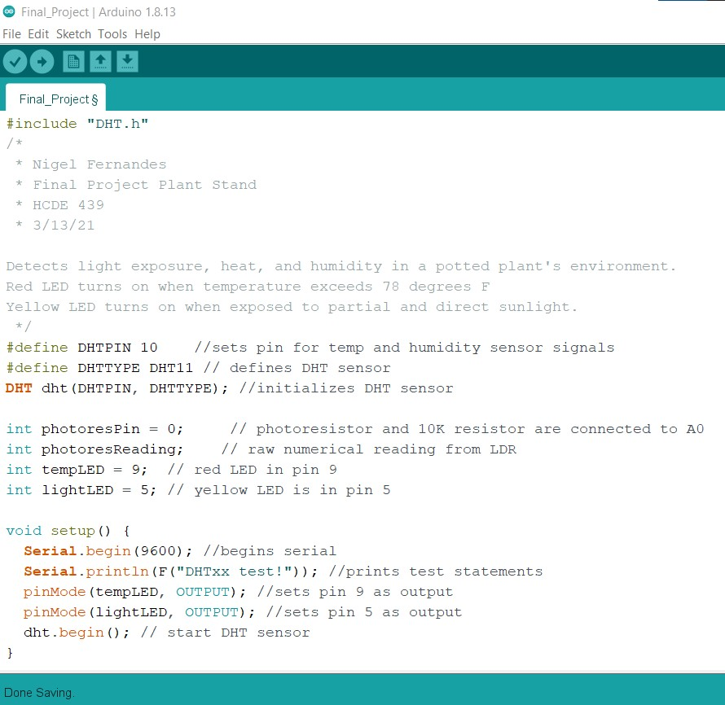
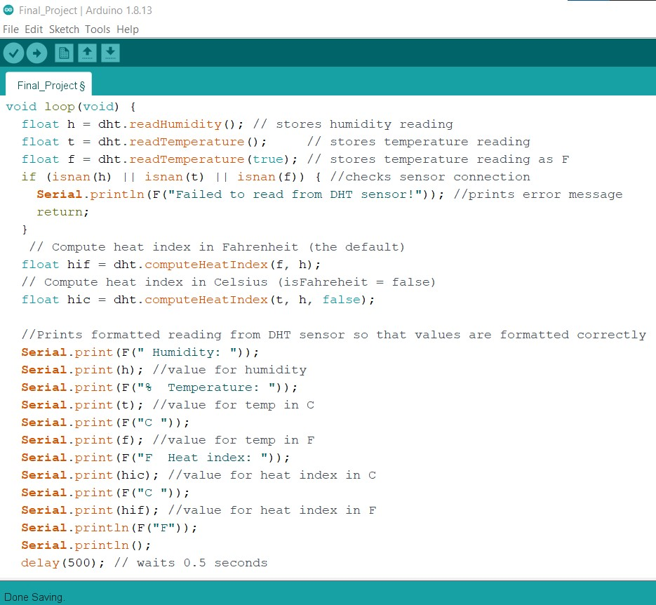
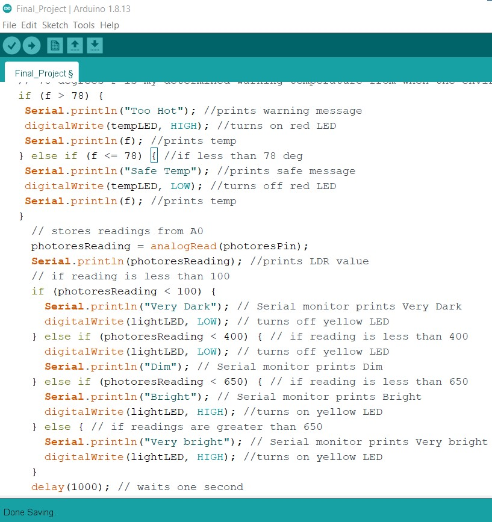
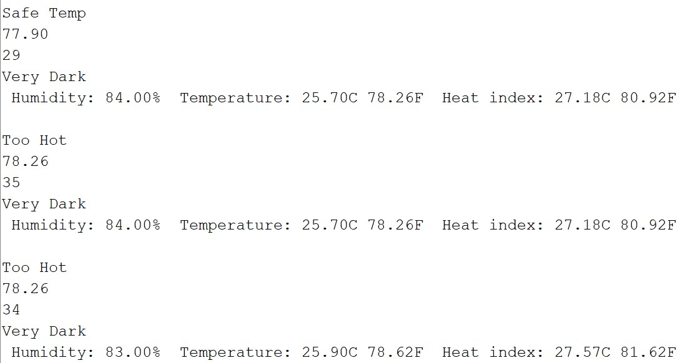
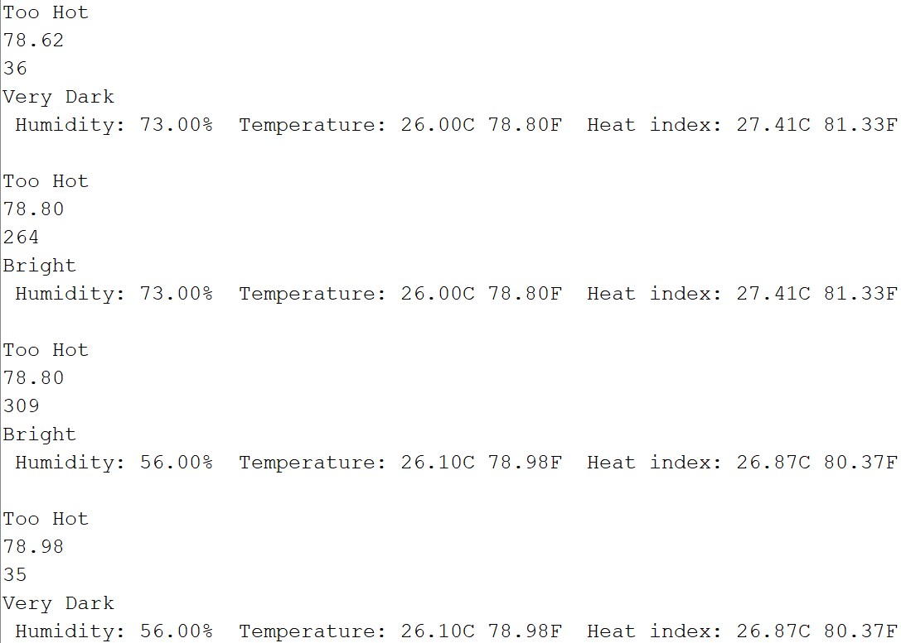
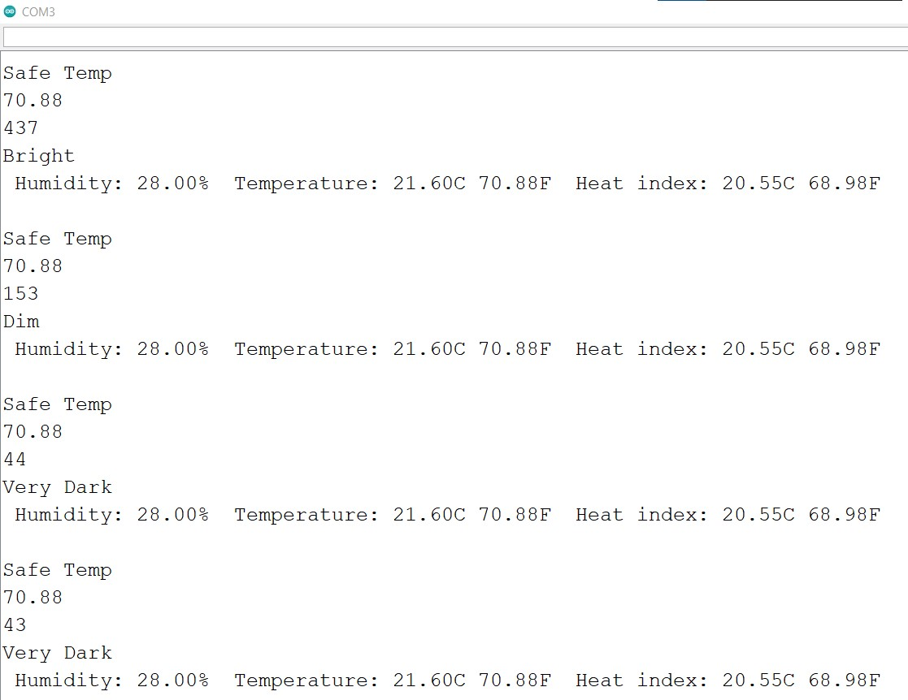
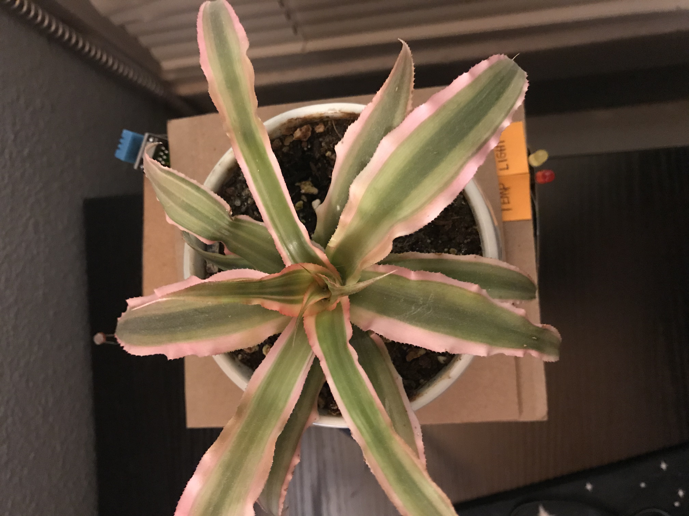
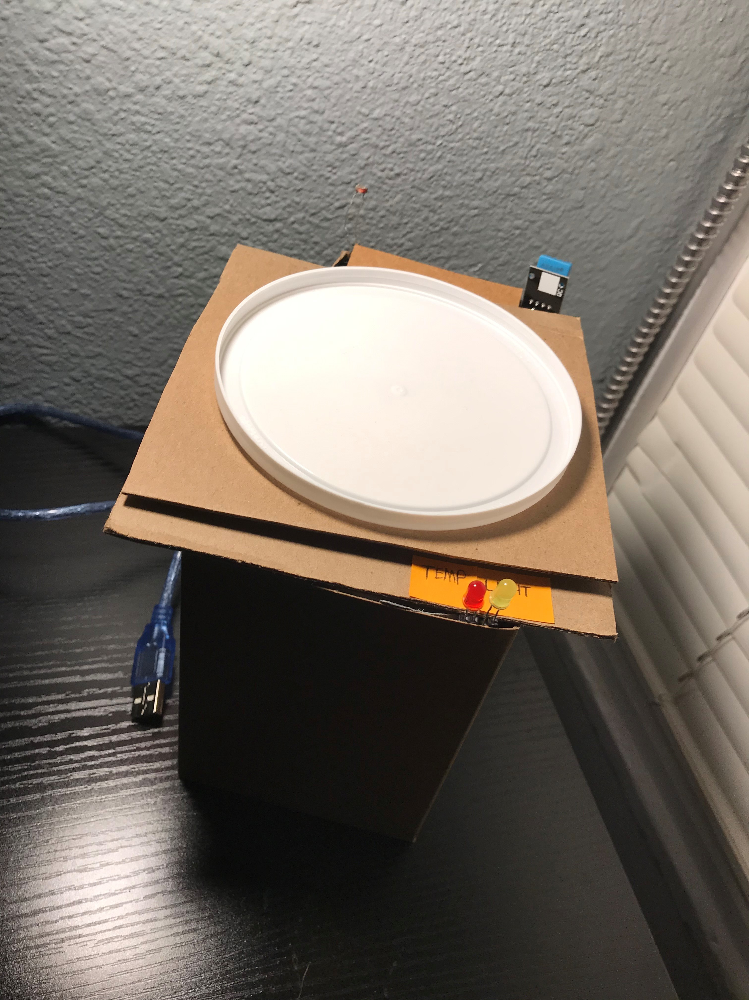
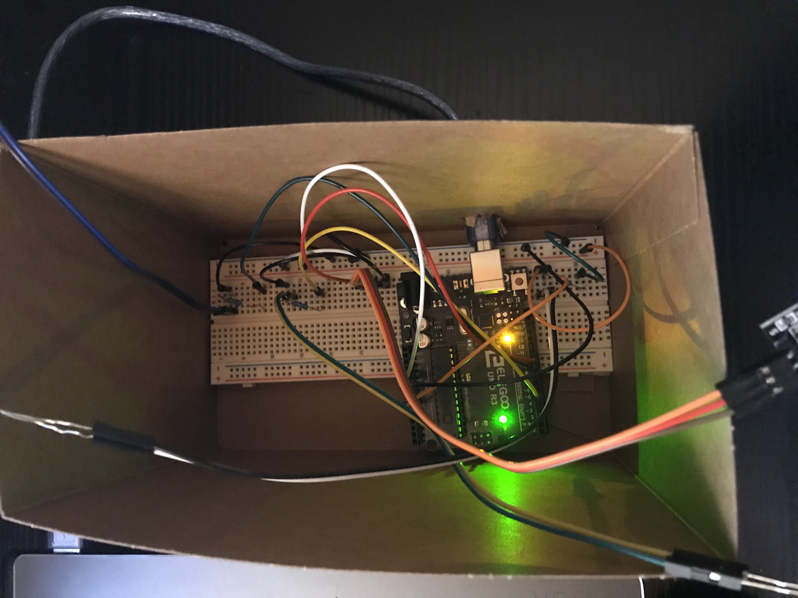
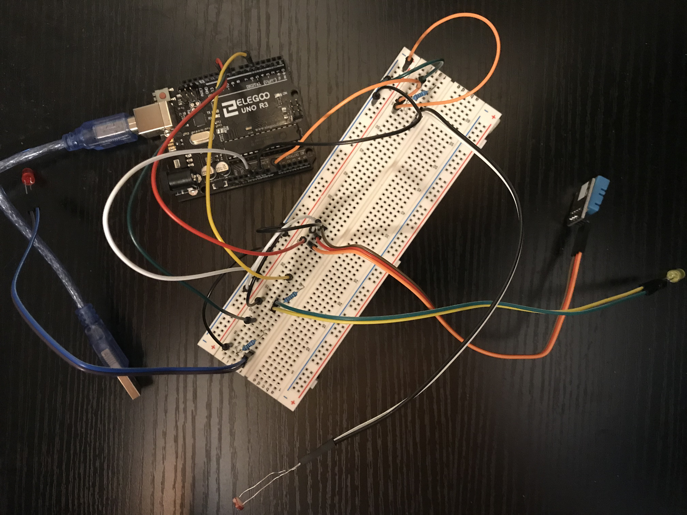

My final project was a device for potted plants that activates LED’s when plants have been exposed to enough sunlight (based on photoresistor readings). I integrated the Temperature and Humidity module to sense when the plants needed a cooler environment. I determined that the 78 degrees F was the ideal warning temperature based on my plants' needs and the typical temperature of my bedroom.
This video demonstrates how the Red LED lights up when the temperature sensor exceeds 78 degrees F and how the Yellow LED turns off when not exposed to sunlight. This video shows how once the sensor cools down below 78 degrees, the Red LED turns off. This video also shows use of the photoresistor.
Here is all the documentation for the final project!   
This is the schematic that shows how I planned out my circuit. My calculations for how I chose my resistor is shown in this image as well.
  These are screenshots from my serial monitor showing how the readings come in and warn if temperature and light reach set amounts
  These are pictures showing how I packaged my arduino and wires into an assembled prototype.
This is my circuit that shows how I configured my breadboard and wires. The image shows how the DHT sensor, LDR, and LEDs are connected on the breadboard. The multicolored Dupont wires are connected to the LEDs, DHT, and LDR to allow them to be exposed to the user. The black wires go to ground and the white wires connect to power.